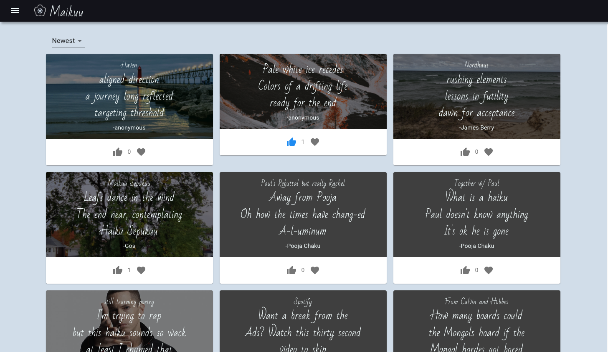
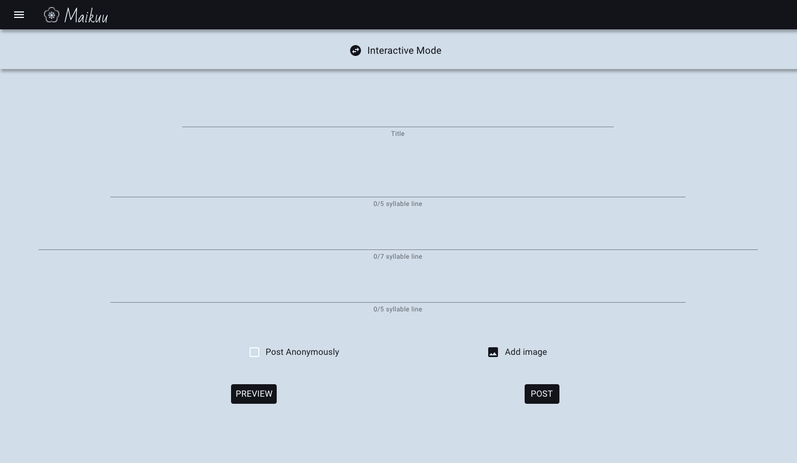
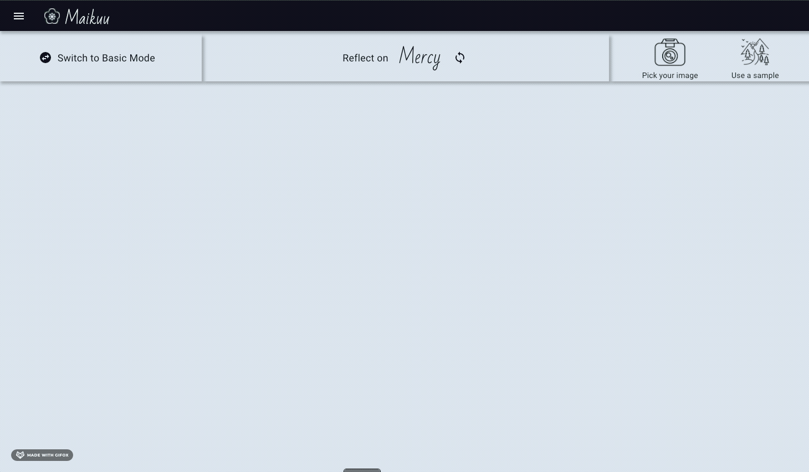

Maikuu
In early 2020, I purchased "Japanese Death Poems - Written by Zen Monks and Haiku Poets on the Verge of Death". I've been slowly reading through these poems, growing more fond of them over time. Later in the year, I was happy to see a unique game mechanic in the newly released "Ghost of Tsushima" video game. The player would direct the camera to several specific points of interest in the current environment and select a haiku line. Once repeating this process twice more, the player would be rewarded with a wearable headband engraved with the newly composed haiku.
I thought this offered the player a great opportunity to engage further in the role-playing aspect of the game. This mechanic brought to mind my recent readings and created a desire to explore this concept a bit further. I decided I would take inspiration from Ghost of Tshushima and create a simple haiku creation app that included a similar guided haiku composition feature.
The key features I was initially targeting were:
As of Christmas 2020, these initial goals have been accomplished. The result ended up taking form as a web application. The account creation, authentication management, hosting, and database was created using Firebase and the frontend development was implemented using React with the Material UI library being commonly utilized.
The Feed
The feed consists of all user posts ordered by a provided filter for date and likes. The user can interact with each post by liking, favoriting, or selecting the post for a focused view. This gives the user a full screen view of the post with options to hide the haiku and just view the image and to view the focus points. These points are generated by the post author and let the viewer see where on the image each line of the haiku was inspired from when hovering over them.
Compose
Maikuu gives users two modes to create their haiku. The first mode is a simple form where a user can fill out the fields with basic options to complete their haiku. The second mode encourages the user to take more time to select an abstract concept to contemplate, use an image for inspiration, and localize the haiku lines to specific focus points on the image.
There are a couple guiding elements to encourage this reflection. First, there is a sample abstract noun presented to kickstart the user's reflection. The concept was predetermined in the Ghost of Tsushima game but I wanted to add more options in Maikuu so I created a sample dictionary of abstract nouns that the user can cycle through for ideas. Second, I provided a few sample inspiration images if the user did not have an image on hand that they would like to use. After selecting the reflection concept and inspiration image, the user can then drag each of the three markers to specific points on the image and begin their composition. Once complete, they are presented with options for adding a title and posting anonymously before confirming the submission.
 Profile
The profile page is a simple feature that allows users to view quickly view collections of posts: likes, favorites, and their own authored haikus.
Check Maikuu out here